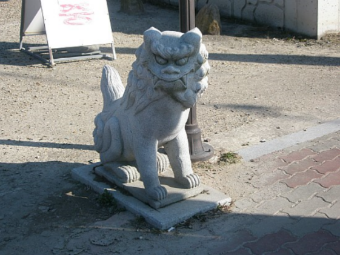

1930년에 일본에서 출간된 손진태의 『조선민담집』에 <일식과 월식>이라는 제목으로 실려 있는데, 1923년 함흥에서 채록한 것으로 밝히고 있다. 한편 1952년 런던에서 출간된 정인섭의 『한국의 설화(Folktales from korea)』에 실린 <불개(The fire dogs)>는 1912년 언양에서 채록한 것이라 하였으니, 그 채록 시기가 더 빠르다. 임석재의 『한국구전설화』에도 1915년 순창에서 채록한 자료가 실려 있다. 따라서 이 설화는 1910년대에 이미 전국에 널리 퍼져 있던 것으로 판단된다.
채록본에 따라 암흑국(暗黑國), 암흑나라, 가막나라, 까막(까망)나라, 어둔 나라 등으로 나타나지만, 이 나라 임금이 ‘백성들이 어둠 속에서 사는 것을 걱정한다.’라는 내용은 공통이다. 더러는‘백성들이 캄캄해서 살기가 어려움’을 강조하기도 한다.
중국 조선족에서 구전된 삼태성 설화에서 노인들이 개가 해를 삼켰다는 이야기를 전해준다.
불개는‘힘이 세고 사나운 개’를 말하는데,‘털복숭이 개’로 설정된 채록본도 있다. 우리나라의 개는 고구려 고분벽화에도 등장할 만큼 오래 전부터 우리와 함께 해 왔는데, 싸움에서 물러서지 않는 강인함을 지니고 있다. 이 설화 속의 ‘불개의 도전’은 ‘암흑나라’의 임금에서 끊임없이 해방을 갈망하는 민중의 염원을 대변하며, 광명과 희망을 염원하는 한국인의 우주적인 진취성을 반영한다.
해와 달이 사람들에게 중요한 것이었기 때문에 일식과 월식이 일어났을 때 사람들은 두려워했고, 이러한 자연현상에 대한 이유를 찾으려 이야기를 만들어 냈다. 그래서 일식과 월식의 자연 현상을 암흑나라에서 온 불개들에 의해 생긴 것이라고 설명하는, 우주기원신화의 성격을 지닌다.
동양의 음양설에서 해와 달은 양과 음을 상징한다. 불개가 삼키지 못한 불덩어리와 얼음덩어리 이야기는 해와 달이 각각 음양을 대표한다는 인식에 바탕을 두고 성립한 신화가 세속화한 모습이다.